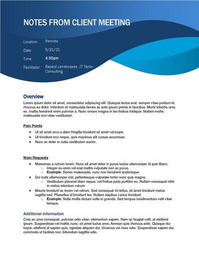
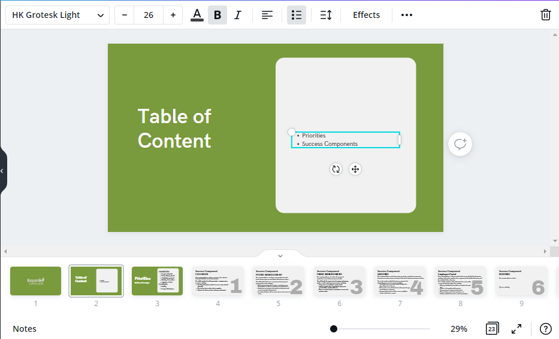
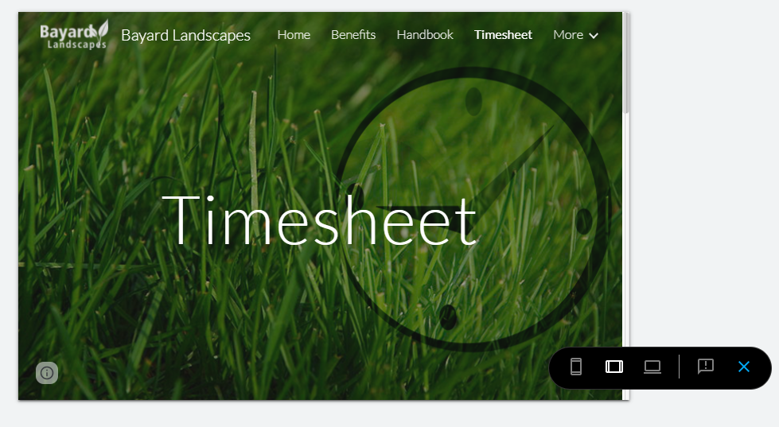
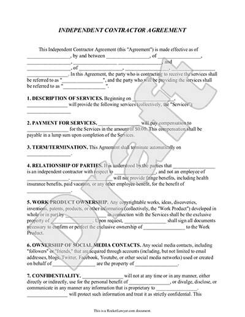
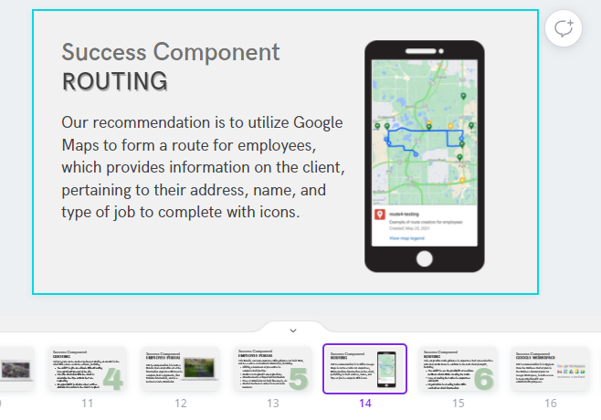
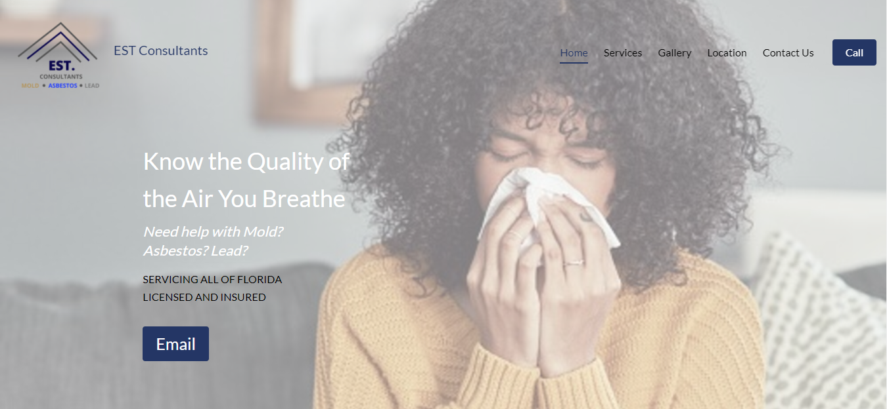
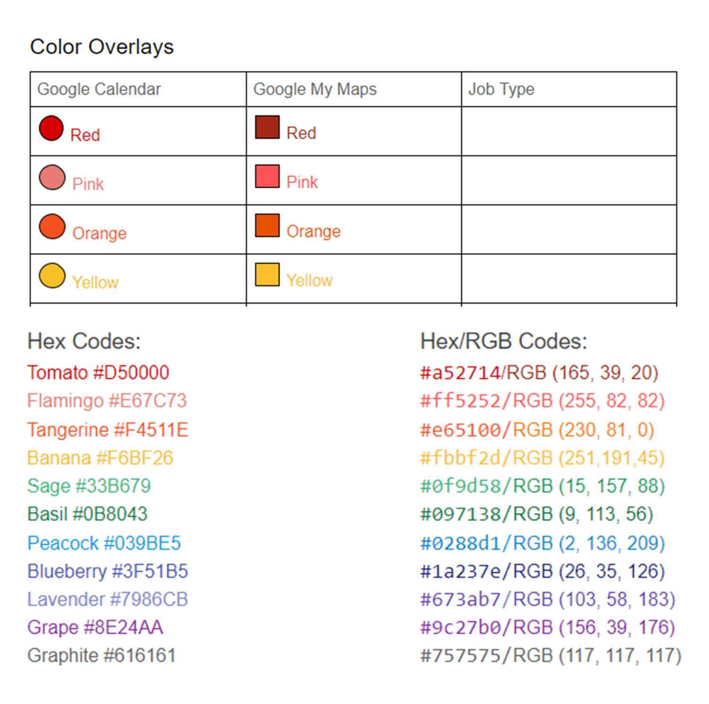
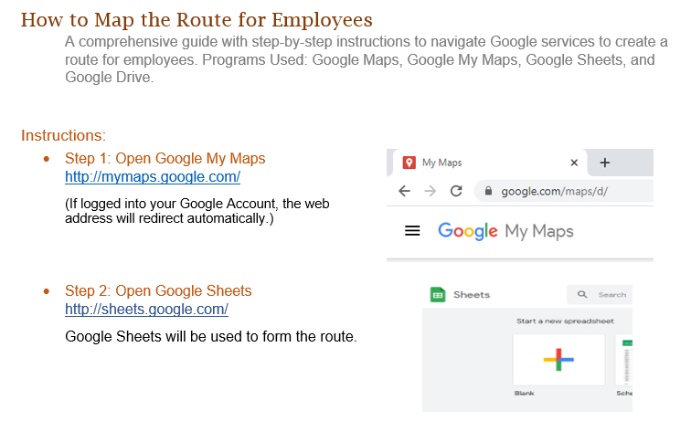
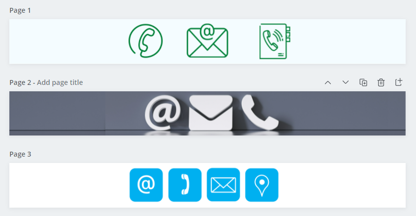

Internship
Summer 2021
In my summer semester, I completed an internship with the company JT Taylor Consulting.
Showcased are the tasks I've completed throughout my internship and skills I've built through my time there.
May 21st - 31st
Tech Data

I participated in a Zoom call with the company Tech Data. The purpose of this call was for a reseller licensing opportunity (the Lead program). During this time, my tasks were to actively listen to the presentation, ask questions for clarity, and gain an understanding of the overall process. This task was benficial because I learned marketing strategies, sales, and how to present calls to leads for the Lead program.
Bayard Landscapes
This meeting I participated in a Google Meets call with the company Bayard Landscapes. It was a consultation meeting regarding their problem areas, where I actively listened to gain an understanding of what their complex issues were and discussed possible solutions. I created notes on the meeting for further reference to review what goals will be accomplished for the company. This helped me build my problem-solving skills and improved my organization skills for note-taking.
May 31st - June 14th
Creating the Presentation
During this time, I was tasked with creating a presentation for the client Bayard Landscapes that lists the priority areas to address and success components that our solutions would provide, i.e., describing the software to use and why it would be beneficial to implement these recommendations. This tasked me helped me learn more on how to use Canva, and improved my graphic design skills with creating presentations and including images with summarized information. A challenge I faced was having a balance between grpahic design with key concepts to present.
Employee Portal
Another one of my tasks was to create an employee portal with Google Sites. A lot of our recommendations utilize Google platforms because it is a central platform for ease of collaboration and there are many Google apps that meet the needs of their requests. The cover image of the Timesheet page was created in Photoshop, which gave me the ability to improve my skill level in using Photoshop as it's a very useful tool in creating graphic design images.
Contract Proofreading
I was tasked with proofreading a contract for the client Coastline Wrestling Academy for a marketing project. This consisted of correcting spelling errors and making sure the information was consistent. This task was important because it built my proofreading skills in grammar and punctuation,while giving me insight into contract agreement structures.
June 14th - 28th
Presenting
During this time, I was tasked with presenting a topic included in the presentation. My job was to research into their problem of creating a route for employees, and I found softwares that could work in collaboration as a solution. This would allow the company to create routes with ease of use and send it to their employees to follow. It allows them a lot of customization for their own purposes too. This task helped me build my public speaking skills in presenting, and a challenge I faced and overcame was nervousness which I combatted by thoroughly practicing beforehand.
EST Environmental Consultants
One of my tasks included revamping the website for the company EST Environmental Consultants. First, I researched into the competitor’s websites to understand the key concepts of their business. This was to find an effective way of displaying their content and learn concepts of the central theme/layout that is integral to the industry. Next, I cropped parts of the site into Photoshop to make visual changes to what I envisioned the site to look like. The site is hosted by the website builder Constant Contact, where I improved the Home page, added a Services page, and changed the colors of the Contact page as it used to be harder to read. These duties were beneficial because it builds my web design skills as I was working with a site builder that I was originally unfamiliar with. A challenge I faced and overcame with this task was that I was unsure of how to customize the template layouts provided, but after I searched the support forums I found a solution to my problem. This task was beneficial because it gave me more experience in web development by working with a site builder that I was unfamilar with and experience working with a client for my journey of becoming a freelancer.
June 28th - July 12th
Color Ledger
At this time, my assignment was to create a color ledger for the client to keep consistency of their color choices for each technology they were using. I created a table to list and rename each color for ease of referencing, and matched them to the colors that correlated. I included the hex codes and RGB codes to refer to their original colors as a guide. This helped me to learn more about color customization in Google Docs and gain a better grasp on color ranges/similarities. A challenge I faced and overcame was converting RGB codes to hex codes for the reference list, and this was resolved by using a color conversion site.
Step-by-Step Guide
My goal was to transition the client into the technologies we presented with a guide to address their concerns and provide instructions on how to utilize these technologies seamlessly. This approach is a documentation that explains each step with a corresponding image, and gives additional information as to why it's necessary. This guide was made with the intention of being beginner friendly, and can be used for reference with any questions or concerns. This process was beneficial for me because it gave me a better understanding of how these Google technologies work by explaining it in parts and involvement with creating thorough documentation of softwares.
July 12th - 26th
Cover Images
My task was to create cover images for Shared Drive folders in Google Drive with images that related to the title of the folders. This concept was beneficial to those who prefer visual communication, and reiterated the main subject of the contents. Through this task, I was able to build my graphic design skills with the platform Canva and learn new processes with this graphic editor.